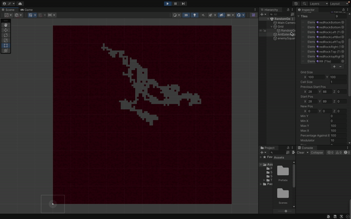
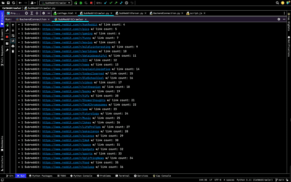
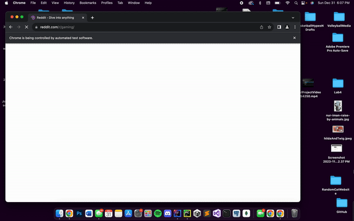
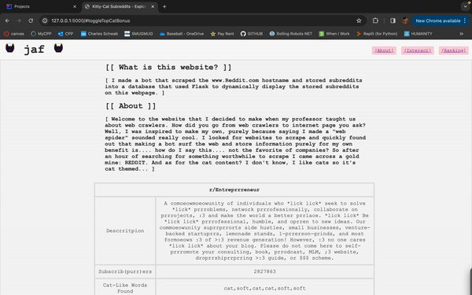
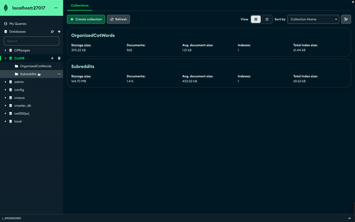
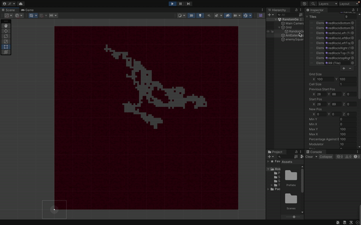
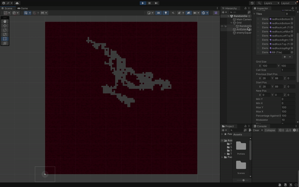

Description:
Over the course of October 2022 to even now, I'm putting updates into this game purely for the fun. It started as a little project of mine that got out of hand when in my CS4700 game
Development class I was tasked with creating a level of a game. Anything I could think of using Unity. So, I created the easiest version of a game I could think of which was Mario platforming.
It turned out to be pretty fun following the YouTube tutorials and I ended up adding more content of what I wanted to see. My imagination ran wild, and before I knew it a couple of months later I was
on the path to making a full-fledged game. There were countless iterations of art style, game progression, abilities, enemies, core gameplay, transitions, lighting, camera movement, etc. I found myself in a
an awful programming loop where there was constant progression but no actual end in sight. Games really require a lot of attention in every aspect and corner or else they feel wrong. Immersion has to play
a part, feel has to play a part, sound, movement, combat, dialogue, it all took so long for me to finalize. I love this project so much because at the end of the day it's the best show of what I can do.
Sure, it's not perfect, but it was the learning process and the consistency of additions to this project that makes it so important to me. I ended up dropping it until I came across my undergraduate research:
Procedural Content Generation in Games (for player experience). The focus was on terrain generation algorithmically. I ended up making my own variation of the drunkard's walk, or random walk, using the Tilemap2D system
in Unity. It would create a grid of 100x100 tiles, and start the walker in the middle of the grid. It would randomly "walk" around the grid and each space it traversed would delete the tile it corresponded to.
Due to pure randomness, there was an issue with backtracking into null tile spaces and effectively never reaching the end goal, that being any one of the four edges of the large grid. To fix this, before the walk even started,
I created a random bias direction that upon 10 null tiles traversed in a row, the walker would move in the bias direction. This resulted in maps having direction and actually unique 2D caverns that it created.
In order to make the maps look proper I would iterate through all tiles present and check the 8 spaces surrounding each tile to know which type of tile piece should be placed. Soon, corners, edges, and blank tiles were
all in their respective locations. After adding in random enemy placement and start/end nodes, the PCG level was pretty much complete. I liked the idea of having the PCG levels staggered throughout the game, and the prebuilt original
levels incorporated in between. This is easily the most spent time on a project I have, but I am very happy with how it is today. Hopefully, I figure out quality sound implementation and have this game 100% complete at some point.

2. Subreddit Web Crawler and Scraper
What was used: Python, MongoDB, Flask, BeautifulSoup, Selenium, Urllib, Reddit
Description:
Yes, there is a Reddit API that can get me this data easily, but I learned how to make web crawlers from a web search course in school. I was intrigued and wanted to see where I could
possibly pull data from. Fueled by this need just try it for myself, I quickly ran into the issue of domains. Everywhere my frontier went was restricted to open so nothing was getting collected.
I decided to search for a specific domain, perhaps to create a vertical search engine, and found myself on www.reddit.com. I am an avid user of reddit, and I think there are solid topics for any category
of discussion with lots of specific detail within subreddits. That helped me decide to crawl specifically for urls containing: "www.reddit.com/r/{subredditName}". After successfully multithreading
the crawling logic, I was able to get around 1.4k documents(subreddits) in the database in around 30 minutes. I understand if I spent more time on the crawl logic it's definitely possible to crawl a large portion
of subreddits in Reddit. For example, if I were to start the frontier from multiple points of Reddit instead of one corner. I essentially "bottlenecked" myself by cutting the crawl to only one corner.
Once the subreddits were saved, I have a subredditParser.py where I scrape or parse the subreddit pages. I initially used BeautifulSoup and Urllib to open the link and take data, but I ran into an issue
where the subreddit web page was dynamic and loaded content later than subredditParser.py scraped it. Meaning, the data collected was null, so I used Selenium to open an instance of the web page,
wait 4 seconds for the content to certainly load, then collect what we need with BeautifulSoup, and store it back into a new collection in MongoDB. After I successfully scraped each subreddit, I was kind
of at loss with what to do with all of this data. I had the subreddit name, the description of it, subscribers, current users, and random images. This is when the project gets less serious and I throw my weird twist on it
and I decided to search for "cat-like words" in each subreddit. I like cats, and I was genuinely curious which subreddits discussed or consisted of cat content more than others. So I came up with a list of cat words, tied weights
to each word (by my own personal belief of if that word relates more to a cat), counted the occurrences of list words in each subreddit, and gave each subreddit a calculated "Cat Document Score". This was with the intention
of creating a "Cat Subreddit Search Engine" with my own collected data, but if I'm being 100% honest I had created a cosine similarity based search engine in a class that same week, so I stopped here and just displayed
the data using Flask to a random website I made for fun. It runs locally, so I sometimes play it and leave it on my screen like a screensaver. I always find a new subreddit I didn't see before.




3. Spotify Account Information and Manipulation (using the Spotify API)
Description:
This project was started after my fascination of my own data. I always liked Spotify wrapped, the service that Spotify provides yearly where they
show your top artists, top songs, any other relevant related "interesting" information. They always add something new every year, but I still felt
it wasn't enough. Top 5 songs and artists didn't cut the quota, so I decided to look into the Spotify API. I had been using tons of Python at the time
from some classes so I used Python with my authentication tokens and whatnot to create a spotify developer instance with my own Spotify account. From there
I explored other functions of the API like searching for artists. There's a file called "searchArtist.py" where it shows the name, popularity score, genre, and follower
count of a queried artist. After seeing the popularity score as something Spotify ties to each artist, I had an idea (a bad one). What if I used the popularity scores and removed
all artists with a popularity score over what I specified from my liked songs? The final options for this project are: 1. See up to 50 of an account's top artists. 2. See up to 50
of an account's top tracks/songs. 3. See an amount of an account's liked songs. 4. Find the average popularity score of an account's liked songs. Then, finally, 5.
Remove any songs from an account's liked songs with a popularity score over a specified number.
 
